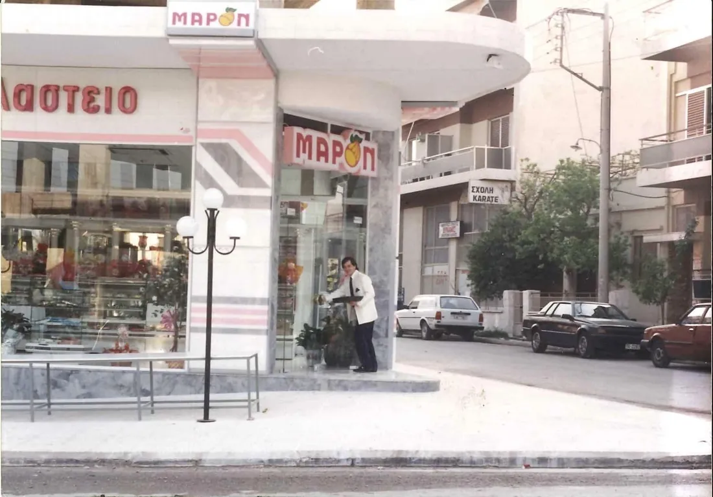
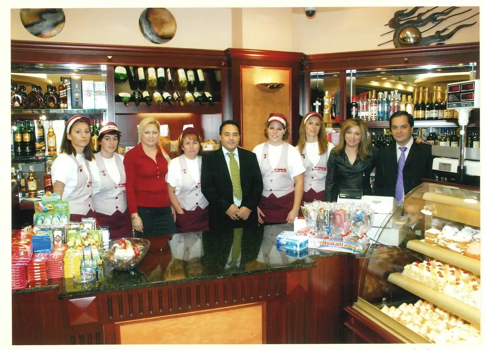
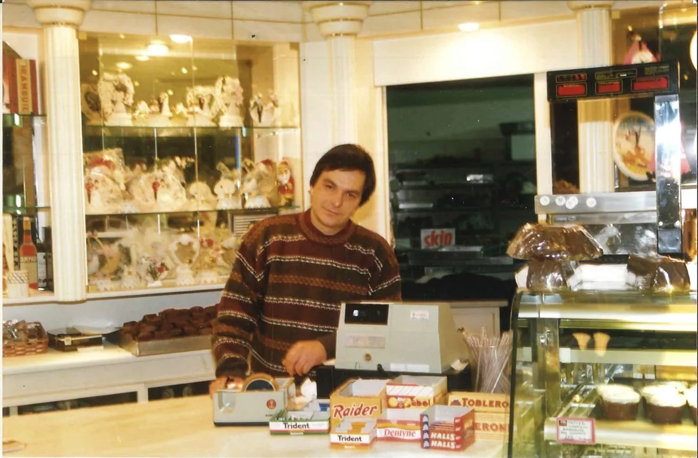
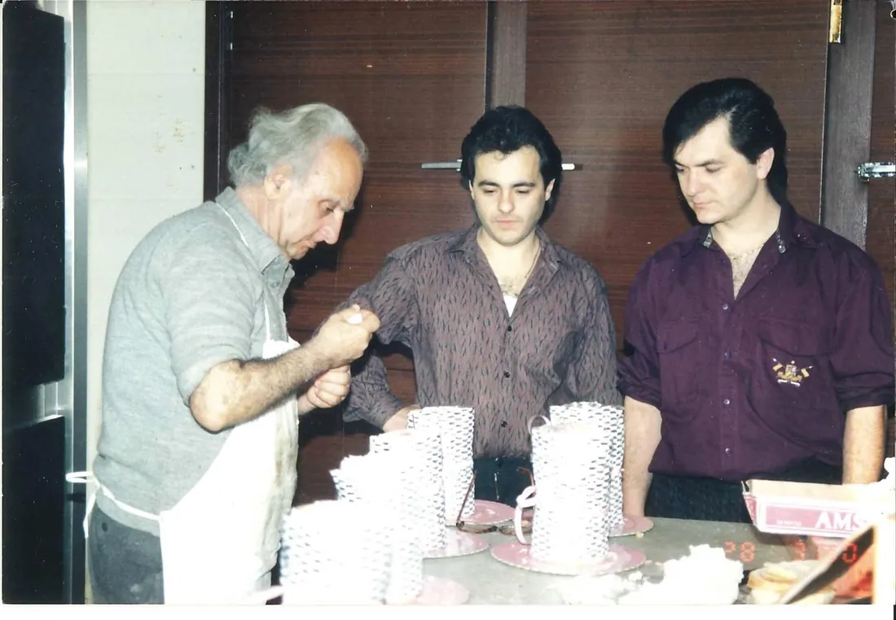
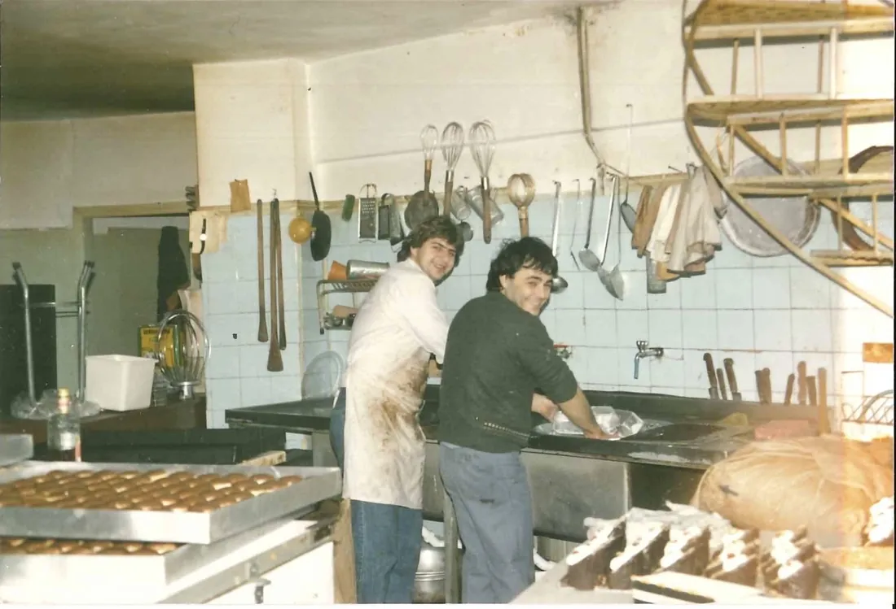
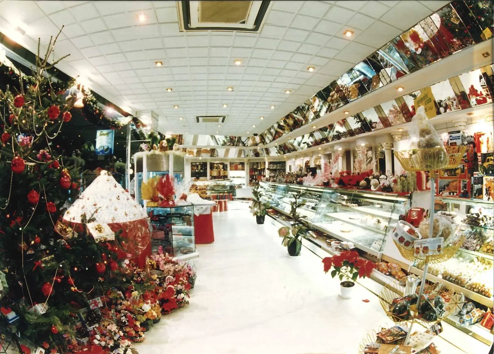
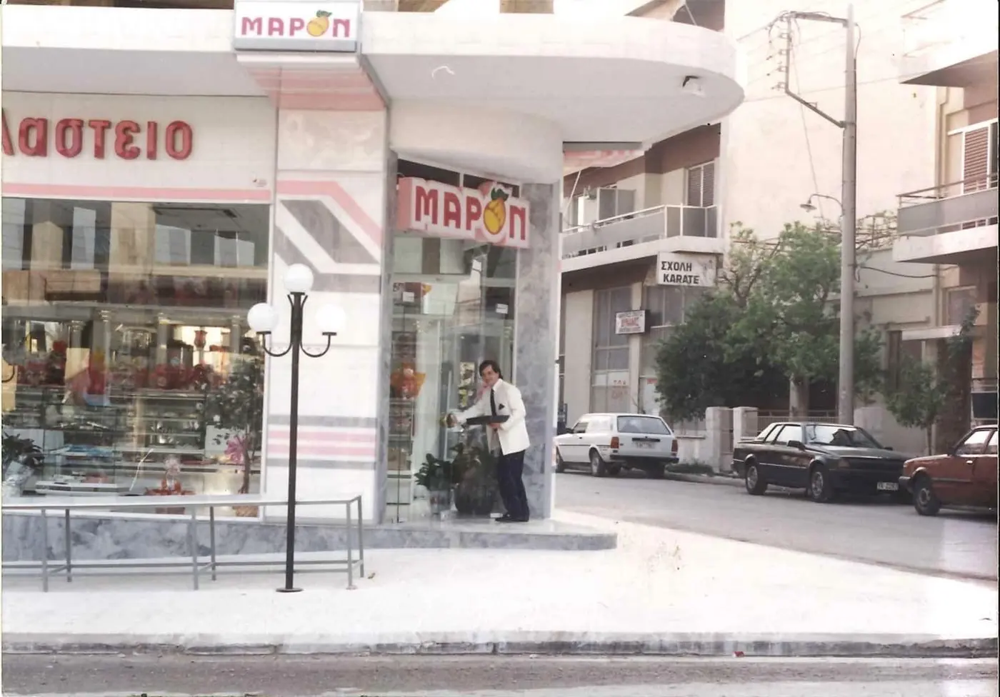
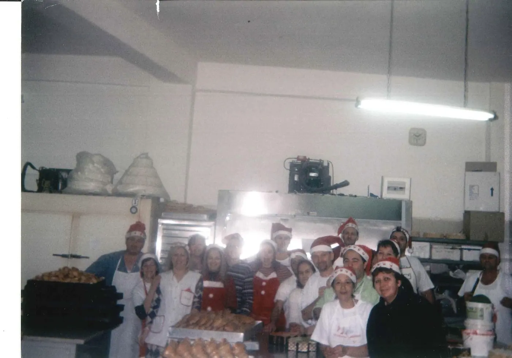
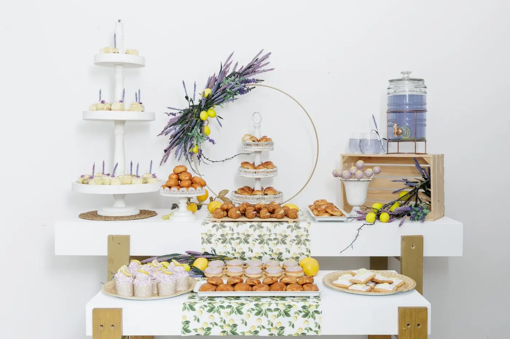
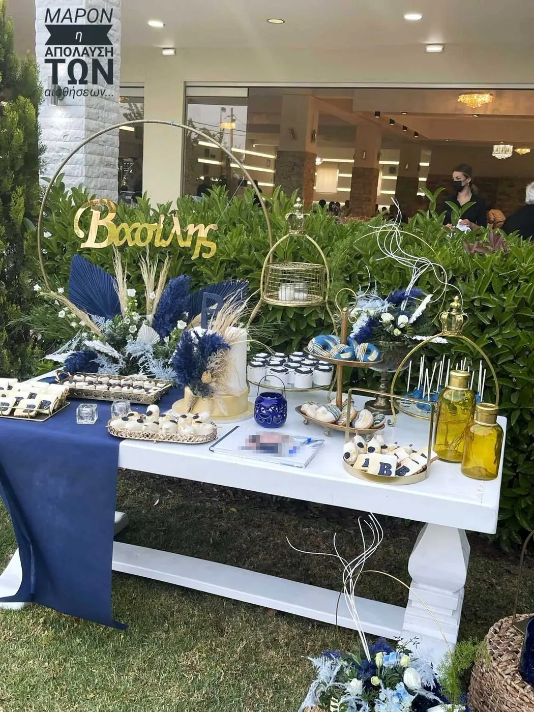

Από το 1983
Ποιοι είμαστε
Με γνώμονα την ποιότητα, την εξειδίκευση και την απόλυτη προσαρμογή στις ανάγκες σας προσφέρουμε ολοκληρωμένες υπηρεσίες εστίασης και φιλοξενίας!





Η ιστορία μας
1983 — σήμερα
Ένα γλυκό ξεκίνημα
Το 1983, ο Ιωάννης και ο Κωνσταντίνος Γλυκός, δύο αδέρφια από την Καστανιώτισσα Ευβοίας, έκαναν πραγματικότητα ένα όνειρο ζωής: ίδρυσαν το πρώτο ζαχαροπλαστείο Maron στο Ίλιον. Με αγάπη για την παράδοση και απεριόριστο μεράκι, υποδέχθηκαν τους πρώτους τους πελάτες σε ένα μικρό, φιλόξενο κατάστημα γεμάτο γλυκές μυρωδιές. Κάθε γλυκό δημιουργούνταν με αφοσίωση και οικογενειακή φροντίδα – στοιχεία που έδωσαν από την αρχή στον χώρο μια αίσθηση ζεστασιάς, σαν να μπαίνει κανείς στο σπίτι παλιών φίλων. Εκείνες οι πρώτες μέρες έθεσαν τα θεμέλια της φιλοσοφίας του Maron: ποιότητα, παράδοση και αγάπη σε κάθε τι που προσφέρεται.
Ανάπτυξη και επέκταση
Το 1990, μόλις οκτώ χρόνια μετά το ξεκίνημα, η ολοένα αυξανόμενη αγάπη του κόσμου οδήγησε στην πρώτη επέκταση του Maron. Το εργαστήριο και ο χώρος πώλησης διευρύνθηκαν, ώστε η οικογένεια να μπορεί να εξυπηρετήσει ακόμα περισσότερους "φίλους" – όπως θεωρούσαν τους πελάτες τους – χωρίς να θυσιάζει τις αξίες της. Παρά την εξέλιξη αυτή, η ζεστή ατμόσφαιρα και η προσοχή στην ποιότητα παρέμειναν αναλλοίωτες. Η επέκταση αυτή απέδειξε ότι με μεράκι και συνέπεια, ακόμα και ένα μικρό συνοικιακό ζαχαροπλαστείο μπορεί να μεγαλώσει μένοντας πιστό στην παράδοση και στους πιστούς του πελάτες.
Ανανέωση με σεβασμό στην παράδοση
Το 2007, μετά από 25 χρόνια γλυκιάς παρουσίας, ήρθε η στιγμή να ανανεωθεί το αρχικό ζαχαροπλαστείο στο Ίλιον. Ο χώρος ανακαινίστηκε για να γίνει πιο σύγχρονος και άνετος, πάντα όμως με σεβασμό στην ταυτότητα και την ιστορία του. Οι γνώριμες μυρωδιές και γεύσεις παρέμειναν το ίδιο αυθεντικές, καθώς η ανανέωση έγινε με φροντίδα ώστε να διατηρηθεί η ψυχή του μαγαζιού. Το ανανεωμένο Maron στο Ίλιον συνδύασε τη διαχρονική ζεστασιά ενός παραδοσιακού ζαχαροπλαστείου με μια φρέσκια εμφάνιση που υποδέχθηκε μια νέα γενιά πελατών χωρίς να αλλοιώσει τον χαρακτήρα του.
Νέα κεφάλαια: αρτοποιία στο κέντρο της Αθήνας
Το 2013, το Maron έκανε ένα τολμηρό βήμα πέρα από τη ζαχαροπλαστική, εισερχόμενο και στον κόσμο της αρτοποιίας. Με το άνοιγμα ενός νέου αρτοζαχαροπλαστείου στο κέντρο της Αθήνας, η οικογένεια διεύρυνε τις προσφορές της, περιλαμβάνοντας πλέον και φρέσκο ψωμί και αλμυρές λιχουδιές – πάντα με την ίδια ποιότητα και πάθος. Το νέο αυτό κατάστημα έφερε τις αγαπημένες γεύσεις του Maron πιο κοντά σε ακόμη περισσότερο κόσμο, γεφυρώνοντας την παράδοση με την καθημερινότητα του πολύβουου κέντρου. Κάθε καρβέλι ψωμί και κάθε γλυκό που δημιουργούταν εκεί είχε την ίδια αγάπη και το ίδιο μεράκι που χαρακτήριζε το πρώτο ζαχαροπλαστείο, αποδεικνύοντας ότι η φιλοσοφία του Maron μπορεί να ανθίζει σε κάθε γειτονιά.
Ένα νέο ζαχαροπλαστείο στο Αιγάλεω
Το Maron ανοίγει το υποκατάστημα στην Ιερά Οδό 287, στο Αιγάλεω.
Παράδοση που συνεχίζεται
Παρ' όλη αυτή την ανάπτυξη, η φιλοσοφία που ενέπνευσε τους ιδρυτές παραμένει αναλλοίωτη στην καρδιά της επιχείρησης. Η αγάπη για την παράδοση, η αδιαπραγμάτευτη ποιότητα των προϊόντων και η διαρκής βελτίωση καθοδηγούν κάθε βήμα, όπως ακριβώς την πρώτη ημέρα. Η ιστορία του Maron είναι τελικά μια ιστορία οικογενειακής αφοσίωσης και ζεστής φιλοξενίας, αποδεικνύοντας ότι όταν κάτι φτιάχνεται με αγάπη και μεράκι, ανθίζει στον χρόνο χωρίς ποτέ να χάνει την ψυχή του.
Νέο κεφάλαιο στο Γαλάτσι
Σύντομα ανοίγει το νέο Maron στην Τραλλέων 129: patisserie, gelateria και ανοιχτό εργαστήριο, με την ίδια οικογένεια πίσω από τη βιτρίνα.
Η ομάδα μας
Journey
to taste
Με απόλυτο σεβασμό στις δικές σας ανάγκες, αλλά και με πολυετή πείρα στον χώρο της εκδήλωσης, αναλαμβάνουμε οτιδήποτε χρειάζεστε για τον γάμο, την βάπτιση ή οποιαδήποτε εκδήλωσή σας. Από δεξίωση γάμου μέχρι και καροτσάκι παγωτού για κέρασμα έξω από την εκκλησία, έχουμε την τεχνογνωσία και τα μέσα να σας προσφέρουμε οτιδήποτε ονειρεύεστε για την δική σας ξεχωριστή μέρα.




